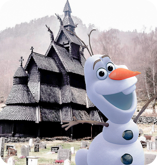
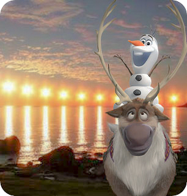
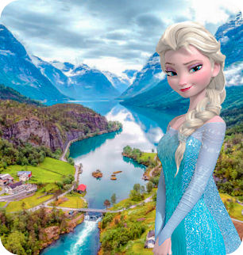
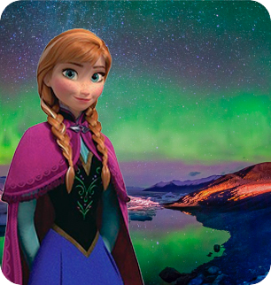

Noruega
Você já pensou em viajar para a Noruega? Conhecido como a terra dos vikings, o país coleciona belezas naturais e uma história bem rica, além de mandar muito bem na gastronomia.
Pontos Turísticos

Igreja de Madeira de Borgund
Vindhellavegen 606, 6888 Borgund, Noruega
Sobre: Na aurora do cristianismo nos países nórdicos, dominados por sagas e lendas viking, um estilo arquitetônico único utilizando pilastras de madeira dominou a construção das primeiras igrejas. De todas de seu gênero, a stavkyrkje de Borgund é provavelmente a mais bela.
Valor do Ingresso: 100 coroas
Duração: 4 horas
Horário de Funcionamento: 8h às 20h
Melhor época para visitar: Maio

Sol da meia-noite
Måsøy, Noruega
Sobre: O Sol da meia-noite é um fenómeno natural observável ao norte do Círculo Polar Ártico e ao sul do Círculo Polar Antártico, locais onde o Sol é visível por 24 horas do dia, nas datas próximas ao solstício de verão.
Valor do Ingresso: Gratuito
Duração: 2 horas
Horário de Funcionamento: 8h às 18h30min
Melhor época para visitar: Verão

Fiorde de Nærøy
Comuna de Aurland, Sogn og Fjordane, Noruega
Sobre: O fiorde de Nærøy é um fiorde situado na comuna de Aurland, em Sogn og Fjordane, na Noruega. Possui uma extensão de cerca de 20 quilómetros, sendo na realidade uma ramificação de um fiorde maior denominado fiorde de Sogn.
Valor do Ingresso: 7 euros
Duração: 1 hora
Horário de Funcionamento: 9h30min às 23h
Melhor época para visitar: Outono e Primavera

Aurora Boreal
Tromsø, Noruega
Sobre: A Aurora Boreal é um fenômeno óptico que ocorre no extremo norte da Terra, formando, em conjunto à Aurora Austral (que acontece no hemisfério sul), os dois tipos de auroras polares que acontecem no planeta. Sua ocorrência está diretamente associada aos ventos solares e ao campo magnético da Terra.
Valor do Ingresso: Gratuito
Duração: 30 min
Melhor época para visitar: Outono e Inverno